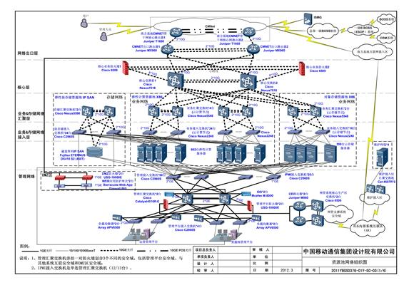
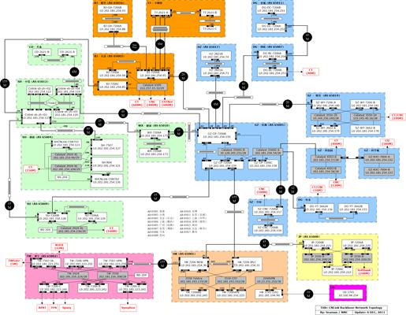
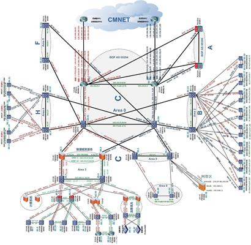
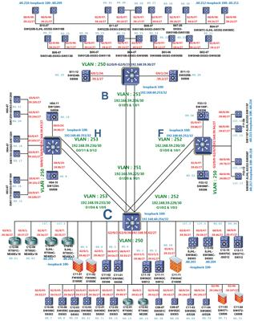

Topology Archive
2011-2014 CNLink Cloud & Backbone Topology
Topology diagrams from the CNLink Networks and China Mobile Cloud project period.




Topology diagrams from the CNLink Networks and China Mobile Cloud project period.



